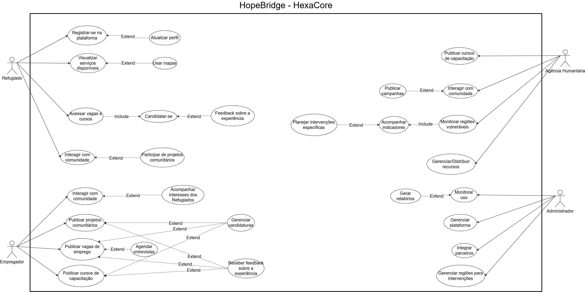

Casos de Uso
Diagrama de Casos de Uso

Especificações de Casos de Uso
Caso de Uso 1
1. Solicitar Abrigo
1.1 Breve Descrição
Este caso de uso permite que o refugiado solicite uma vaga de abrigo disponível na região que está. O sistema apresenta abrigos próximos e critérios de acesso. O refugiado seleciona o abrigo que quer e envia a solicitação, que é encaminhada à agência humanitária responsável.
1.2 Atores
- Ator Principal: Refugiado
- Ator Secundário: Agência Humanitária
2. Fluxo de Eventos
2.1 Fluxo Principal
O caso de uso inicia-se quando o refugiado clica em "Solicitar Abrigo".
2.1.1 O sistema lista os abrigos disponíveis próximos.
2.1.2 O refugiado seleciona um abrigo da lista [FA01].
2.1.3 O sistema verifica se há vagas disponíveis no abrigo escolhido [RN01][FE01].
2.1.4 O sistema apresenta detalhes do abrigo e solicita a confirmação da solicitação.
2.1.5 O refugiado confirma a solicitação.
2.1.6 O sistema registra a solicitação, gera um protocolo e envia à agência responsável [RN02].
2.1.7 O sistema exibe mensagem de “Solicitação enviada com sucesso”.
2.1.8 O caso de uso é encerrado.
2.2 Fluxos Alternativos
[FA01] Refinar Busca por Abrigos
Este fluxo inicia no passo 2.1.2, quando o refugiado prefere realizar um filtro.
FA01.1 O sistema apresenta filtros como: tipo de abrigo, distância, serviços adicionais e capacidad.
FA01.2 O refugiado ajusta os filtros e confirma a busca.
FA01.3 O sistema atualiza a lista de abrigos disponíveis.
(Retorna ao passo 2.1.2.)
2.3 Fluxos de Exceção
[FE01] Abrigo Sem Vagas
Disparado no passo 2.1.3.
O sistema identifica que o abrigo não possui vagas.
O sistema notifica o usuário e apresenta abrigos alternativos próximos.
O sistema retorna ao passo 2.1.2.
[FE02] Falha no Registro da Solicitação
Disparado no passo 2.1.6.
O sistema não consegue registrar ou enviar a solicitação devido a erro técnico.
O sistema exibe mensagem de falha e solicita que o usuário tente novamente.
Retorna ao passo 2.1.5.
3. Requisitos Especiais
3.1 O caso de uso deve funcionar em modo offline, armazenando a solicitação localmente e enviando-a assim que houver conexão.
4. Regras de Negócio
[RN01] Verificação de Capacidade
O sistema deve verificar a quantidade de vagas atualizadas antes de registrar a solicitação.
5. Precondições
5.1 O refugiado deve estar autenticado na plataforma.
5.2 A funcionalidade de localização deve estar ativa (GPS ou localização aproximada).
6. Pós-Condições
6.1 A solicitação é registrada e vinculada ao perfil do refugiado.
7. Pontos de Extensão
7.1 Nos passos 2.1.1 e 2.1.3 este caso de uso pode ser estendido por “Usar Mapas”.
Caso de Uso 2
1. Candidatar-se a Vaga de Emprego
1.1 Breve Descrição
Este caso de uso permite que o refugiado se candidate a oportunidades de trabalho de empregadores parceiros. O sistema mostra vagas compatíveis com o usuário, que pode visualizar detalhes, enviar candidatura e acompanhar o status.
1.2 Atores
- Ator Principal: Refugiado
- Ator Secundário: Empregador Parceiro
2. Fluxo de Eventos
2.1 Fluxo Principal
O caso de uso começa quando o refugiado seleciona “Vagas de Emprego”.
2.1.1 O sistema apresenta lista de vagas compatíveis com o perfil do refugiado [FA01].
2.1.2 O refugiado seleciona uma vaga.
2.1.3 O sistema apresenta os detalhes da vaga: requisitos, localização, remuneração e tipo de trabalho.
O refugiado decide candidatar-se e confirma a ação [FE01].
2.1.5 O sistema verifica se o refugiado atende aos critérios mínimos da vaga [RN01].
2.1.6 O sistema registra a candidatura e notifica o empregador parceiro [RN02].
2.1.7 O sistema exibe mensagem de candidatura concluída com sucesso.
2.1.8 O caso de uso é encerrado.
2.2 Fluxos Alternativos
[FA01] Filtrar Vagas de Emprego
Inicia-se no passo 2.1.1.
FA01.1 O sistema exibe filtros como: área de atuação, distância, turno e nível de exigência.
FA01.2 O refugiado ajusta os filtros.
FA01.3 O sistema atualiza a lista de vagas.
(Retorna ao passo 2.1.1.)
2.3 Fluxos de Exceção
[FE01] Candidatura Inválida
Disparado no passo 2.1.4.
O sistema identifica informações incompletas no perfil (ex.: falta de documento obrigatório).
O sistema solicita atualização do perfil.
Retorna ao passo 2.1.4 após a correção.
[FE02] Requisitos Não Atendidos
Disparado no passo 2.1.5.
O sistema identifica que o refugiado não atende aos requisitos mínimos.
O sistema apresenta mensagem e sugere cursos de capacitação relacionados.
Retorna ao passo 2.1.1.
3. Requisitos Especiais
3.1 A busca de vagas deve funcionar offline usando dados sincronizados previamente.
4. Regras de Negócio
[RN01] Verificação de Critérios
Antes de registrar candidatura, o sistema deve verificar automaticamente:
- disponibilidade do refugiado,
- documentos obrigatórios,
- idade mínima,
- requisitos profissionais.
[RN02] Notificação ao Empregador
O sistema deve notificar imediatamente o empregador parceiro após o registro da candidatura.
5. Precondições
5.1 O refugiado deve estar autenticado.
5.2 Deve existir ao menos uma vaga ativa cadastrada no sistema.
6. Pós-Condições
6.1 A candidatura é registrada.
6.2 O empregador é notificado.
7. Pontos de Extensão
7.1 No passo 2.1.3 este caso de uso pode ser estendido por “Usar Mapas” para visualizar localização do trabalho.
7.2 No passo 2.1.6 pode ser estendido por “Receber Feedback sobre a Experiência” pelo empregador.
Caso de Uso 3
1. Registrar-se na plataforma.
1.1 Breve Descrição
Este caso de uso descreve o processo pelo qual o Refugiado cria uma nova conta na plataforma HopeBridge, fornecendo informações pessoais básicas para habilitar o acesso aos serviços essenciais, oportunidades e recursos disponíveis no sistema.
1.2 Atores
- Ator Principal: Refugiado
- Ator Secundário: Não se aplica
2. Fluxo de Eventos
2.1 Fluxo Principal
2.1.1 O caso de uso inicia quando o Refugiado seleciona a opção “Criar conta / Registrar-se” na plataforma.
2.1.2 O sistema exibe o formulário de cadastro com campos obrigatórios.
2.1.3 O Refugiado informa dados pessoais (nome, data de nascimento, nacionalidade, idioma preferencial, e-mail e senha).
2.1.4 O Refugiado confirma que leu e aceita os termos de uso e a política de privacidade.
2.1.5 O Refugiado envia os dados para cadastro.
2.1.6 O sistema valida os dados informados. [RN01] [RN02]
2.1.7 O sistema cria o perfil inicial do Refugiado.
2.1.8 O sistema envia e-mail ou mensagem de confirmação (quando aplicável).
2.1.9 O sistema exibe a mensagem “Cadastro realizado com sucesso”.
2.2 Fluxos Alternativos
[FA01] Cadastro com dados parciais
Inicia-se no passo 2.1.3.
O refugiado não preenche campos opcionais (ex: idioma adicional).
FA01.1 O sistema prossegue com a criação da conta utilizando apenas os dados obrigatórios.
Retorna ao passo 2.1.5.
[FA02] Informar documento alternativo
Origem: Passo 2.1.3
O Refugiado não possui documento formal válido.
FA02.1 O sistema permite selecionar "Não possuo documento" e prosseguir com dados declaratórios.
Retorna ao passo 2.1.5
2.3 Fluxos de Exceção
[FE01] Dados inválidos ou formato incorreto
Disparado no passo 2.1.6.
FE01.1 O sistema identifica erro (ex.: e-mail inválido, senha fraca).
FE01.2 O sistema exibe mensagem indicando o erro e solicita correção.
Retorna ao passo 2.1.3
[FE02] E-mail já registrado
Disparado no passo 2.1.6.
FE02.1 O sistema informa que já existe uma conta com o e-mail informado.
FE02.2 O sistema orienta o Refugiado a recuperar a senha ou usar outro e-mail.
Retorna ao passo 2.1.3.
3. Requisitos Especiais
3.1 O sistema deve permitir cadastro em múltiplos idiomas.
3.2 A interface deve ser responsiva e compatível com dispositivos móveis.
3.3 O cadastro deve ser concluído em até 5 segundos após o envio.
3.4 Deve funcionar em modo de baixa conectividade (offline parcial, quando aplicável).
4. Regras de Negócio
[RN01] E-mail e senha devem obedecer às políticas mínimas de segurança definidas pela plataforma.
[RN02] A criação do perfil só é concluída se todos os campos obrigatórios forem preenchidos.
[RN03] Dados sensíveis devem ser criptografados conforme padrões de segurança aplicáveis.
5. Precondições
5.1 O Refugiado deve ter acesso ao sistema.
5.2 O sistema deve estar operacional.
6. Pós-Condições
6.1 Uma nova conta de Refugiado é criada na plataforma.
6.2 O perfil básico é armazenado.
6.3 Um registro de auditoria é gerado.
7. Pontos de Extensão
7.1 Após o cadastro, o usuário pode acessar o catálogo de serviços da plataforma.
Caso de Uso 4
1. Publicar Vaga de Emprego
1.1 Breve Descrição
Este caso de uso permite que o Empregador Parceiro cadastre uma nova oportunidade de trabalho na plataforma. O sistema coleta os dados da vaga, valida as informações e a torna visível para os refugiados compatíveis.
1.2 Atores
- Ator Principal: Empregador
- Ator Secundário: Não se aplica
2. Fluxo de Eventos
2.1 Fluxo Principal
O caso de uso inicia-se quando o Empregador seleciona a opção "Nova Vaga" no painel.
2.1.1 O sistema exibe o formulário de cadastro da vaga (Título, Descrição, Requisitos, Localização, Faixa Salarial).
2.1.2 O Empregador preenche as informações da vaga.
2.1.3 O Empregador define o período de vigência da vaga.
2.1.4 O Empregador confirma a publicação [FA01].
2.1.5 O sistema valida se todos os campos obrigatórios foram preenchidos corretamente [RN01] [FE01].
2.1.6 O sistema registra a nova vaga no banco de dados.
2.1.7 O sistema exibe a mensagem "Vaga publicada com sucesso".
2.1.8 O caso de uso é encerrado.
2.2 Fluxos Alternativos
[FA01] Cancelar Publicação
Este fluxo inicia no passo 4 do fluxo principal.
- FA01.1 O Empregador decide não prosseguir e seleciona "Cancelar".
- FA01.2 O sistema solicita confirmação do cancelamento, alertando sobre a perda dos dados não salvos.
- FA01.3 O Empregador confirma.
- O sistema retorna à tela inicial do painel do empregador e o caso de uso encerra.
2.3 Fluxos de Exceção
[FE01] Dados Obrigatórios Ausentes
Disparado no passo 5 do fluxo principal.
- O sistema identifica que campos obrigatórios (ex: Título ou Localização) estão vazios.
- O sistema destaca os campos em vermelho e exibe a mensagem "Por favor, preencha todos os campos obrigatórios".
- O fluxo retorna ao passo 2 para correção.
3. Requisitos Especiais
3.1 O formulário de publicação deve ser responsivo para preenchimento via tablets ou smartphones.
3.2 A publicação da vaga deve ocorrer em tempo real (menos de 3 segundos após confirmação).
4. Regras de Negócio
[RN01] Validação de Conteúdo O sistema não deve permitir a publicação de vagas que contenham termos discriminatórios ou ofensivos, baseando-se em uma lista de palavras proibidas.
[RN02] Vigência Mínima A data de encerramento da vaga deve ser, no mínimo, 24 horas posterior à data de publicação.
5. Precondições
5.1 O Empregador deve estar logado no sistema.
5.2 O cadastro da empresa do Empregador deve estar com status "Ativo" e validado pela administração.
6. Pós-Condições
6.1 A vaga fica disponível para visualização e candidatura pelos refugiados (Atores do tipo Refugiado).
6.2 Um registro de auditoria da criação da vaga é gerado.
7. Pontos de Extensão
7.1 No passo 7 do fluxo principal, este caso de uso pode ser estendido por "Impulsionar Vaga" (funcionalidade paga para destaque).
Caso de Uso 5
1. Atualizar Perfil Pessoal
1.1 Breve Descrição
Este caso de uso permite que o refugiado atualize suas informações pessoais. As informações atualizadas são utilizadas para melhorar recomendações de serviços e emprego.
1.2 Atores
- Ator Principal: Refugiado
- Ator Secundário: Não se aplica
2. Fluxo de Eventos
2.1 Fluxo Principal
O caso de uso inicia-se quando o refugiado acessa a área “Meu Perfil”.
2.1.1 O sistema exibe dados atuais do perfil.
2.1.2 O refugiado seleciona o campo que deseja editar.
2.1.3 O sistema exibe tela de edição.
2.1.4 O refugiado altera os dados.
2.1.5 O refugiado confirma a atualização.
2.1.6 O sistema valida as informações inseridas [RN01][FE01].
2.1.7 O sistema salva as alterações.
2.1.8 O sistema exibe mensagem de “Perfil atualizado com sucesso”.
2.1.9 O caso de uso é encerrado.
2.2 Fluxos Alternativos
[FA01] Atualizar Documentos
Inicia-se no passo 2.1.2.
FA01.1 O sistema solicita upload do novo documento.
FA01.2 O refugiado envia o arquivo.
FA01.3 O sistema verifica autenticidade e formato.
Retorna ao passo 2.1.5.
2.3 Fluxos de Exceção
[FE01] Dados Inválidos
Disparado no passo 2.1.6.
O sistema detecta erros (formato incorreto, campos obrigatórios vazios).
O sistema exibe mensagem e destaca os erros.
Retorna ao passo 2.1.4.
3. Requisitos Especiais
3.1 Upload de documentos deve utilizar compressão automática.
3.2 Dados sensíveis devem ser criptografados em repouso e trânsito.
4. Regras de Negócio
[RN01] Validação de Documentos
Documentos devem estar dentro da validade e ser legíveis.
5. Precondições
5.1 O refugiado deve estar autenticado.
6. Pós-Condições
6.1 Dados atualizados são registrados no sistema.
7. Pontos de Extensão
7.1 No passo 2.1.7 este caso pode ser estendido por “Receber Feedback sobre a Experiência”.
Caso de Uso 6
1. Comunicar-se com Agência Humanitária
1.1 Breve Descrição
Permite que o refugiado envie mensagens, dúvidas ou solicitação de ajuda à agência responsável por sua região. A comunicação pode ser por texto, voz ou imagem.
1.2 Atores
- Ator Principal: Refugiado
- Ator Secundário: Agência Humanitária
2. Fluxo de Eventos
2.1 Fluxo Principal
O caso de uso inicia-se quando o refugiado seleciona “Comunicação”.
2.1.1 O sistema exibe opções de contato: texto, áudio ou mídia.
2.1.2 O refugiado escolhe o tipo de mensagem.
2.1.3 O refugiado escreve ou grava a mensagem e envia.
2.1.4 O sistema valida a mensagem [RN01].
2.1.5 O sistema encaminha a mensagem à agência.
2.1.6 O sistema exibe confirmação de envio.
2.1.7 O caso de uso é encerrado.
2.2 Fluxos Alternativos
[FA01] Anexar Imagem ou Documento
Inicia no passo 2.1.2.
FA01.1 O refugiado adiciona arquivo ao envio.
FA01.2 O sistema verifica formato e tamanho.
Retorna ao passo 2.1.3.
2.3 Fluxos de Exceção
[FE01] Mensagem Não Entregue
Disparado no passo 2.1.5.
O sistema perde conexão.
A mensagem é armazenada localmente e reenviada automaticamente quando houver sinal.
Retorna ao passo 2.1.6.
3. Requisitos Especiais
3.1 Suportar baixa conectividade.
3.2 Criptografia ponta a ponta obrigatória.
4. Regras de Negócio
[RN01] Conteúdo Permitido
O sistema deve bloquear envios com conteúdo ofensivo ou ilegal.
5. Precondições
5.1 O refugiado deve estar autenticado.
5.2 A agência deve estar disponível para atendimento.
6. Pós-Condições
6.1 A mensagem é arquivada no histórico.
6.2 A agência recebe notificação.
7. Pontos de Extensão
7.1 Pode ser estendido por “Feedback sobre a Experiência”.